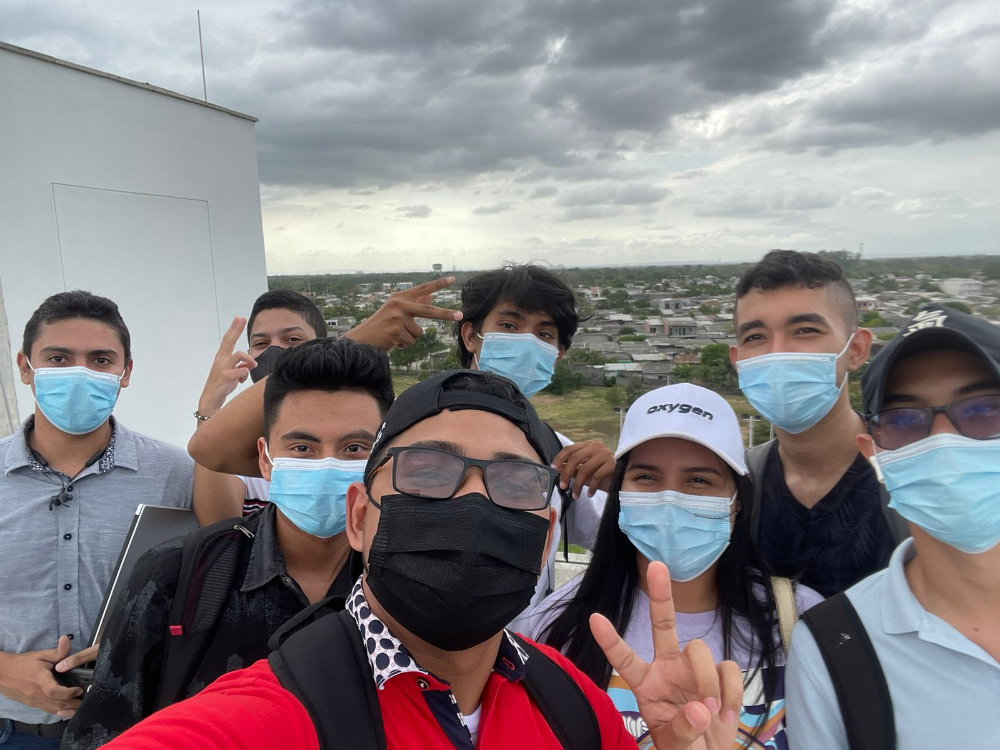
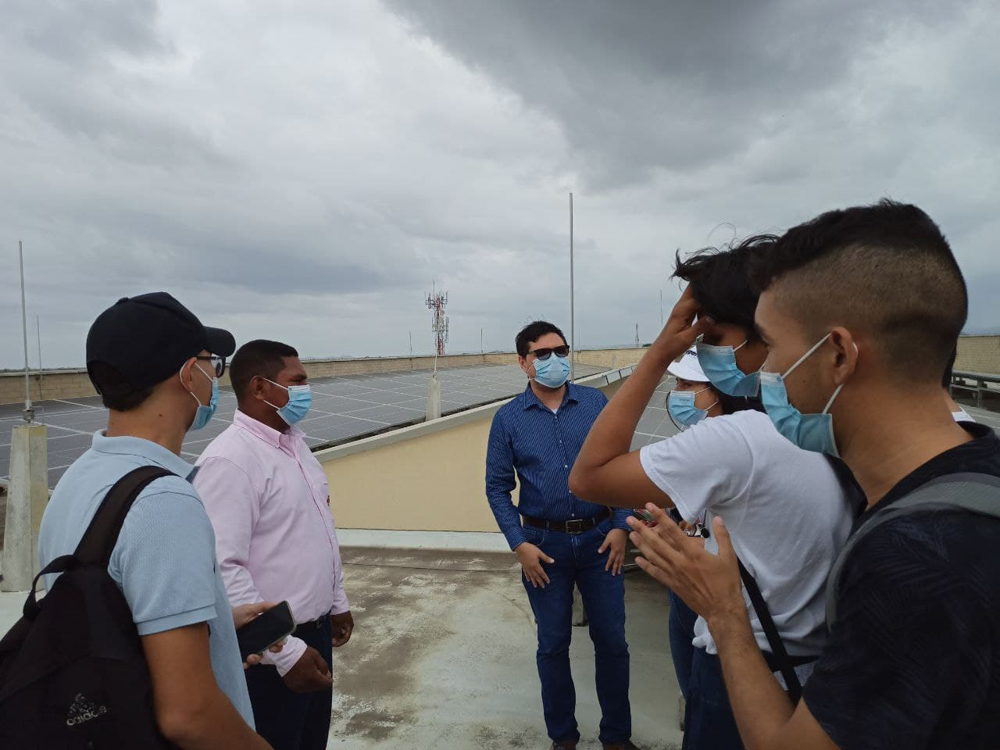
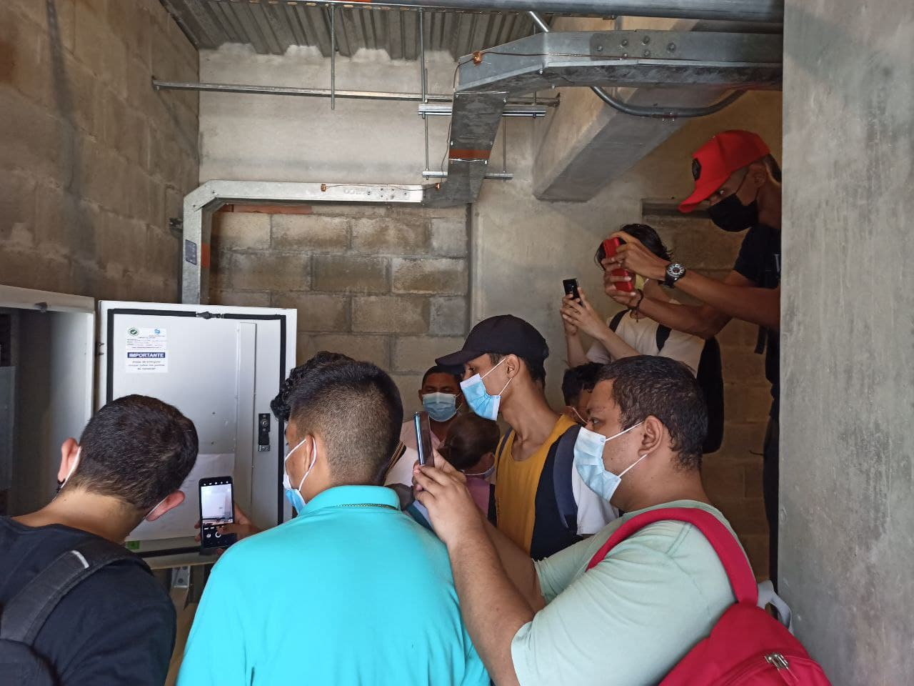
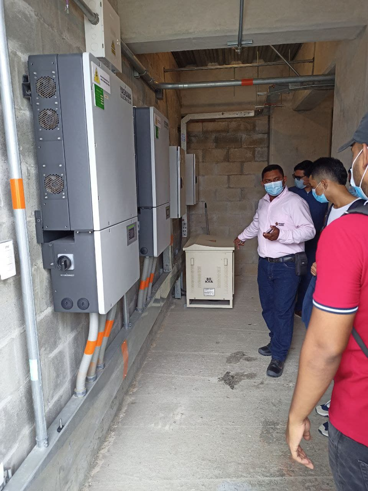

En la tarde del pasado lunes, 7 de febrero de 2022 en el horario, los estudiantes de quinto y séptimo semestre del programa de Ingeniería Electrónica realizaron una visita a la instalación de la Planta Solar Fotovoltaica del Bloque 3 de la Universidad Pontificia Bolivariana Seccional Montería. El propósito de la actividad consistió en que los estudiantes de los cursos de Sistemas Fotovoltaicos y Teoría Electromagnética se familiarizaran con la instalación y que a partir de este acercamiento logren contextualizar algunos conceptos trabajados en sus respectivos cursos. La visita contó con el acompañamiento de los profesores Francisco Barreiro y Miguel Ortiz, así como del director de programa Fabián Lara. A la actividad asistieron más de 30 estudiantes que lograron ver los módulos solares y el cuarto eléctrico donde se realiza la conversión de esta energía para la alimentación de circuitos eléctricos en el edificio.
   